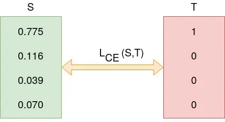
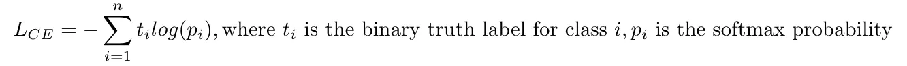

import torch
import torch.nn as nnRegression Losses
y_true = torch.tensor([[3.0], [0.0], [2.0], [8.0]])
y_pred = torch.tensor([[1.5], [3.5], [4.5], [8.5]]) # error: -1.5, 3.5, 2.5, 0.5
# L1 Loss aka MAE
criterion = nn.L1Loss(reduction='sum')
loss = criterion(y_pred, y_true) # error: |-1.5| + |3.5| + |2.5| + |0.5| = 8
print('L1 Loss: ', loss)
# L2 Loss aka MSE
criterion = nn.MSELoss(reduction='sum')
loss = criterion(y_pred, y_true) # error: (-1.5)^2 + (3.5)^2 + (2.5)^2 + (0.5)^2 = 21
print('L2 Loss: ', loss)L1 Loss: tensor(8.)
L2 Loss: tensor(21.)When to choose L1 loss and when to choose MSE loss?
- Use L1 loss when feature selection is required
- Use L1 loss when outliers are present because L2 loss will make outliers even more (because it squares the difference), making loss more sensitive to outliers
- Use L2 loss generally for well-behaved datasets (i.e. less outliers)
- L2 loss is easier to optimize than L1 loss
Smooth L1 loss?
- Detail: Creates a criterion that uses a squared term if the absolute element-wise error falls below beta and an L1 term otherwise. It achieves this by transitioning from a quadratic (MSE-like) loss for small errors to a linear (MAE-like) loss for larger errors.
- Primary Advantage: tries to solve the problem discussed above: making L2 loss less sensitive to outlier
- Other Advantages:
- it is less prone to exploding gradients.
- L2 region provides smoothness over L1Loss near 0
Huber Loss?
- similar to
Smooth L1loss i.e. it tries to makeMSEless sensitive to outliers by transitioning from a quadratic (MSE-like) loss for small errors to a linear (MAE-like) loss for larger errors. - conceptually, it is similar to
Smooth L1, it only differs in parametrization
| Smooth L1 | Huber |
|---|---|
Multi-class classification losses
target = torch.tensor([1, 0, 4])
logits = torch.randn(3, 5, requires_grad=True) # logits are the raw, unnormalized scores output by the model for each class
print('Logits: ', logits, '\n')
# Cross Entropy Loss
criterion = nn.CrossEntropyLoss()
loss = criterion(logits, target)
print('Cross Entropy Loss: ', loss)
# Cross Entropy Loss with label smoothing
criterion = nn.CrossEntropyLoss(label_smoothing=0.1)
loss = criterion(logits, target)
print('Cross Entropy Loss with label smoothing: ', loss)
# NLL Loss
log_softmax = nn.LogSoftmax(dim=1)
log_softmax_logits = log_softmax(logits)
criterion = nn.NLLLoss()
loss = criterion(log_softmax_logits, target)
print('NLL Loss: ', loss)
Logits: tensor([[-0.5214, 0.4200, -0.5788, -0.2010, -0.8349],
[ 1.4741, -1.7601, -1.3311, -1.6192, -1.0451],
[ 0.2042, 0.6382, 0.4343, 0.7187, -0.8201]], requires_grad=True)
Cross Entropy Loss: tensor(1.3132, grad_fn=<NllLossBackward0>)
Cross Entropy Loss with label smoothing: tensor(1.3812, grad_fn=<AddBackward0>)
NLL Loss: tensor(1.3132, grad_fn=<NllLossBackward0>)Cross Entropy Loss explained…
Suppose data is:
We used normalized logits i.e. after softmac to calculate loss w.r.t. GT

Formula:

Calculation:

NOTE: In Pytorch if one uses the nn.CrossEntropyLoss the input must be unnormalized raw value (aka logits), the target must be class index instead of one hot encoded vectors.
criterion = nn.CrossEntropyLoss()
input = torch.tensor([[3.2, 1.3,0.2, 0.8]],dtype=torch.float)
target = torch.tensor([0], dtype=torch.long)
criterion(input, target)Output: tensor(0.2547)
What is input to nn.CrossEntropyLoss()?
Logits not softmaxed logits
Logits are unnormalized raw outputs without activation in the last i.e. output layer
What is label smoothing?
Label smoothing replaces the hard label (e.g.,[1.0, 0.0, 0.0]) with a smoothed version (e.g., [0.9, 0.05, 0.05]).
The uniform distribution acts as a regularizer, preventing the model from becoming overly confident in its predictions for a single class.
Under the hood: Softmax?
Formula:
Under the hood we do not want to compute this directly because if \(f_i\)’s are large then computing their exponential causes numerical instability.
To solve this, we use a trick. Multiply numerator and denominator by a constant C
Use mathematical operations to show
We keep C =
Basically this means we make largest term = 0
f = np.array([123, 456, 789]) # example with 3 classes and each having large scores
p = np.exp(f) / np.sum(np.exp(f)) # Bad: Numeric problem, potential blowup
# instead: first shift the values of f so that the highest number is 0:
f -= np.max(f) # f becomes [-666, -333, 0]
p = np.exp(f) / np.sum(np.exp(f)) # safe to do, gives the correct answerLogSoftmax?
\(\text{LogSoftmax}(x_{i})=\log \left(\frac{\exp (x_{i})}{\sum _{j}\exp (x_{j})}\right)\)
Why we need Logsoftmax? Consider this:
As the numbers are too big the exponents will probably blow up (computer cannot handle such big numbers) giving Nan as output. Also, dividing large numbers for softmax calculation, can be numerically unstable.
Another advantage of taking log of probabilities: Since the probabilities of independent events multiply, and logarithms convert multiplication to addition, log probabilities of independent events add. Log probabilities are thus practical for computations.
Under the hood: nn.CrossEntropyLoss combines LogSoftmax and NLLLoss.
Why softmax is used for normalization? Why not other function?
Why Softmax 1. \(e^x\) is always positive no matter the sign of x. This is good because to read anything as probab or chances, it has to be + 2. training neural networks with \(e^x\) is easy because derivative calculation is easy 3. quashes low values. For example: - softmax([1,2])
- [0.26894142, 0.73105858] # it is a cat perhaps !? - softmax([10,20])
- [0.0000453978687, 0.999954602] # it is definitely a CAT !
- It applies a lower and upper bound so that they’re understandable.
​Why not others:
- Min-Max normalization OR Standard normalization
Softmax normalization reacts to small and large variation/change differently but standard normalization does not differentiate the stimulus by intensity so longest the proportion is the same, for example,
std_norm([1,2])
- [0.333, 0.667] # it is a cat perhaps !?
std_norm([10,20])
- [0.333, 0.667] # it is a cat perhaps !?
BUT
softmax([1,2])
- [0.26894142, 0.73105858] # it is a cat perhaps !?
softmax([10,20])
- [0.0000453978687, 0.999954602] # it is definitely a CAT !
Not differentiable at min/max boundaries.
Doesn’t sum to 1 → not valid for probability.
Another problem arises when there are negative values in the logits. In that case, you will end up with negative probabilities in the output (if using standard normalization). The Softmax is not affected with negative values because exponent of any value (positive or negative) is always a positive value.
Other Benefits of Softmax:
- Probabilistic Interpretation: Softmax ensures all outputs are in [0,1] and sum to 1 → valid probability vector.
- Differentiability: It is smooth and differentiable → critical for backpropagation in neural nets.
- Relative Comparison: It models relative confidence ‚Äî a higher \(z_i\) leads to much higher \(ùëù_ùëñ\)
Categorical cross-entropy vs sparse categorical cross-entropy ?
Basically they are same thing. It is just unncessary jargon which can cause confusion.
- Categorical cross-entropy: is used when true labels are one-hot encoded, for example, we have the following true values for 3-class classification problem [1,0,0], [0,1,0] and [0,0,1].
- In sparse categorical cross-entropy , truth labels are integer encoded, for example, [1], [2] and [3] for 3-class problem.
Binary classification losses
# binary classification
target = torch.tensor([[1], [0], [1]])
logits = torch.tensor([[-2.5], [3.2], [4.8]])
# BCEWithLogitsLoss
## used for binary classification
criterion = nn.BCEWithLogitsLoss() # takes raw logits
loss = criterion(logits, target.float())
print('BCEWithLogitsLoss: ', loss)
# BCELoss
criterion = nn.BCELoss() # takes sigmoided logits
loss = criterion(logits.sigmoid(), target.float())
print('BCELoss: ', loss)BCEWithLogitsLoss: tensor(1.9423)
BCELoss: tensor(1.9423)Gradient clipping in Binary Cross Entropy?
- if predicted class probab = 0 -> \(log(p) = -inf\) : undesirable
- Moreover, in gradient descent,and \(\frac{d log(p)}{d x} = \frac{1}{p} = \frac{1}{0} = inf\) : also Undesirable
- Solution: Gradient clipping: Under the hood Pytorch’s
BCELossclamps its log function outputs to be greater than or equal to -100
How to use BCEWithLogitsLoss for binary segmentation?
- good practise is to use
pos_weightargument to weigh the positive or negative class more. - But note that since it is
BCEWithLogitsLossi.e. binary meaning there output neuron is 1 in this case. So,pos_weightis the weight for positive class (e.g. foreground) which can be calculated by counting the number of positive and negative pixels for complete training dataset and use the average of these counts to calculate thepos_weight.
2 Strategies for class-imbalance?
- use
class weightswhile calculating loss/ training model to give weights to each class: inversely proportional to their frequency count - use an alternative loss like Focal loss
How to convert multi-class classification into multi-label classification in Pytorch?
1. Change Target Format
Multi-class: target is a single integer per sample (e.g., tensor([2, 0, 1]))
Multi-label: target is a binary vector per sample (e.g., tensor([[0,1,1], [1,1,0], [1,0,0]]))
2. Loss Function
Multi-class:
nn.CrossEntropyLoss()(expects class index targets)Multi-label:
nn.BCEWithLogitsLoss()(expects multi-hot binary vectors)
3. Inference
Multi-class:
# Apply softmax to get probabilities (optional) probs = torch.softmax(logits, dim=1) # Get predicted class (index of highest probability) preds = torch.argmax(logits, dim=1)Multi-label:
probs = torch.sigmoid(logits) predictions = (probs > 0.5).int() # thresholding
(conceptually: replace softmax with sigmoid)
Multi-class:
nn.Softmax(dim=1)(during inference)Multi-label:
nn.Sigmoid()(applies independently to each class)
Contrastive Loss
nn.TripletMarginLoss:- computes triplet loss = max(d(a,p)-d(a,n)+margin, 0)
- here d(a,p) is distance b/w a and p using norm. Default is L2 norm
- computes triplet loss = max(d(a,p)-d(a,n)+margin, 0)
nn.TripletMarginWithDistanceLoss:- computes triplet loss with a custom distance function = max(d(a,p)-d(a,n)+margin, 0)
- here d(a,p) is a custom function which user can define. Default is pairwise distance
- it can be easily modified to 1-
cosine_similarity
- computes triplet loss with a custom distance function = max(d(a,p)-d(a,n)+margin, 0)
When to choose euclidean loss over cosine similarity loss or vice-versa?
Euclidean Distance - reconstruction (AutoEncoders) - regression - small-dimension size
Cosine Distance - Large dimensional - textual data - NLP, Retrieval
KL divergence loss
- is a measure of how one probability distribution differs from another
- KL Divergence helps you understand how much one set of things (like candies in a bag) is different from another set (like another bag of candies)
- used in
- Training VAE
- Knowledge Distillation
- The key idea behind KL Divergence Loss is to quantify how much information is lost when we try to approximate one distribution (the “true” distribution) with another (the “predicted” distribution).
Mathematically, the KL Divergence Loss is defined as:
KL(P||Q) = Σ P(x) log(P(x) / Q(x))
Where P is the true distribution and Q is the predicted/approximated distribution. The KL Divergence is a non-symmetric measure — it tells us how much information is lost when using Q to approximate P, but not vice versa.
Relation b/w CrossEntropyLoss and KL Divergence Loss?
both cross entropy and KL divergence measure the difference between two probability distributions.
The difference is that it calculates the the total entropy between the distributions, while KL divergence represents relative entropy.
KL divergence measures the information loss when one distribution is used to approximate another
Cross entropy is typically used in supervised learning tasks where there is a fixed target distribution, while KL divergence is more suitable for unsupervised learning tasks and applications involving the comparison or approximation of two probability distributions.
Mathematically, H(P, Q) = H(P) + D_KL(P || Q)
- where H(P, Q) : Cross Entropy; H(P): Entropy of P
H(P, Q) = - ∑ P(x) * log(Q(x))
D_KL(P || Q) = ∑ P(x) * log(P(x) / Q(x))
=> H(P, Q) = H(P) + D_KL(P || Q)
Entropy explained… Also why is there a negative sign in Entropy?
Formula:
Why -ve sign?
Look at the graph of log(x)
We can see that - log(0.00001) -> it is close to -infinity - log(0.99999) -> it is close to 0 (like -0.0000001)
Now, Entropy reflects Randomness.
Suppose \(p = probability of us being correct\)
If p is low => less confidence => more Entropy (aka randomness) - if -ve sign is not there then, log(0.00001) = -inf => meaning very less randomness: which is contradictory.
Similarly, if p is high => less confidence => more Entropy (aka randomness) - if -ve sign is not there then, log(0.999999) = -0.000001 => meaning high randomness on full Real scale ranging from -inf to +inf.
That is why we use, -ve sign.
Refer this article for more insights about Entropy and understanding it better!